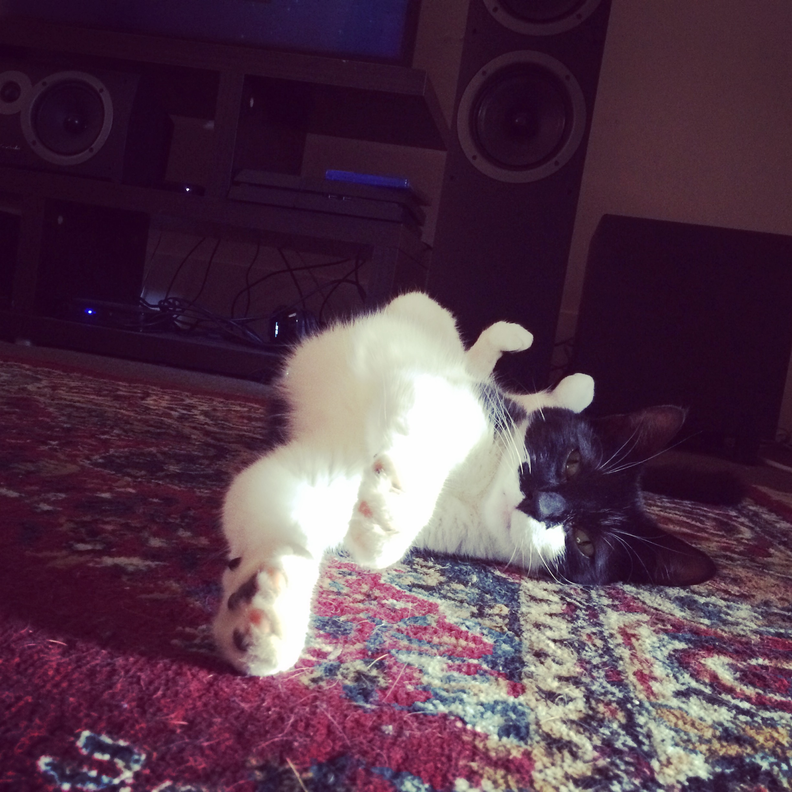

My name is Karel Fourie and I currently reside in West Auckland. I am quite into philosophy and tend to think about values a lot. If I can highlight two values that I consider vital to me and the way I do things it would be humility regarding what I know, and the constant striving towards improvement. There will always be people who can teach me how to do something better, or how to BE a better person myself, and the willingness to accept and continuously implement the new skills and wisdom, even in the face of adversity, is very important to me.
I am attending EDA because it offers me a golden opportunity to change over to an industry where I can feel intellectually stimulated, where I can indulge my love of learning and ultimately give me more flexibility in how, where and when I work. I look forward to undertaking this journey with you all!
 This monochromatic marauder is Toulie. She started life as a feral kitten underneath the St James Theatre and after spending her teenage years with a lovely lady in Pokeno adopted the odd man living in the front house. Initially he didn’t even know that she had done so but sure enough little curled balls on couches were seen more and more frequently and eventually her bowl was transferred.
Hobbies include, sleeping, waking up, looking for another spot to sleep in, and then falling asleep halfway there. No bathroom door can stand in her way, and if the unimaginable does happen, she will stick a paw under the door in solemn solidarity.